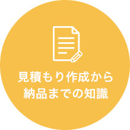
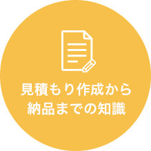

プログラミングで
人生の安定を手に入れよう

バンコクのノマドエンジニア育成教育
iSara[イサラ]
まずは２０日間で、
月１０万稼げるスキルを手に入れよう
※受講料金は実質０円です。詳しくは資料請求をどうぞ
第６期生：2019年11月25日 ~ 2019年12月14日
*締め切りました
第７期生：2020年2月17日 ~ 2020年3月7日
*締め切りました
第８期生：2020年4月 ~ 5月ごろを予定
*資料請求受付中です
エンジニアとして
本当の自由を手に入れるためには？
エンジニア需要の高まりに伴い、
プログラミングスクールが増えています。
しかしそこでの学習の先は、
提携して決められた就職先に就職すること。
これで本当にいいのですか？
日本人エンジニアはアメリカと較べて
給料が格段に低い。
その理由がここにあり、
エンジニアは自分の給料を
コントロールするべきなのです。
スキルを身につけたエンジニアは、
人生をコントロールすることでより自由に。
そこで必要なのが「稼ぐ力」です。
ABOUT
ノマドエンジニア育成講座
iSara[イサラ]とは
「稼ぐこと」にフォーカスした
Webエンジニア育成講座です。
稼げるエンジニアに必要な
５つのスキルとは？

基本的な
プログラミングスキル

案件獲得に必要な
営業力

見積もり作成から
納品までの知識

自分の付加価値を
高めるスキル

フリーランス同士の
横のつながり
iSaraで
「基本的なプログラミングスキル」は教えません
基本的なプログラミングスキルは無料で学べる時代。
iSarでは、基礎知識学習は
事前課題とチャットサポートのみ。
[バンコク渡航前１ヶ月]
事前課題で基礎知識を学ぶ
[バンコク到着後]
実践的に稼ぐことに特化した学習
[バンコク帰国後]
講座実施後の案件獲得サポート
スキルアップしてもフリーランスエンジニア
として食べていくことは難しい。
フリーランスにはプログラミングスキル以外が大切。
iSara[イサラ]で学べること
iSaraの学習では、エンジニアとして
「稼ぐ」ために必要な能力を身につけます。
 



これらを教えるのがiSaraです。
他のプログラミングスクールとここが違う！
iSara[イサラ]の３つのメリット

現役フリーランスから学べる
他のプログラミングスクールとは違い、実際にフリーランスとして活動しているエンジニアが直接講師を勤めます。

実践を通じて学べる
フリーランスにとって最短の学習方法は「実践。」iSaraでは実案件を通して学びます。現役フリーランサーの案件サポートに加え、クラウドソーシングを活用。初心者の自分じゃ無理と思うかもしれませんが、現役フリーランスがサポートしますので大丈夫。

授業料が実質０円
講座費用258,000円以上の金額が稼げるまで「永久サポート延長」があります。
さらに！帰国後もサポート付き
リモートワーカーのチームを作ることで
受注率、受注単価が大幅に向上します。
iSaraは講座が終わって終了ではありません。
参加メンバーのチャットグループを作り、帰国後も継続的に案件参加できるようになります。
また、チームで働くことを継続的に稼ぎやすい仕組みづくりも構築しております。
事前課題ができない人はお断りしています。
iSaraでは、無料で学べるプログラミング基礎知識は教えません。事前課題一覧はメールで送りつつ、チャットサポートのみ。従って、本気で取り組まないと結果は出ません。
創業メンバー
実際にフリーランスとして活躍している
エンジニアが立ち上げました

渋谷 圭佑
ISARS(THAILAND)CO.,LTD.の代表です。学生起業の後にリクルートへ就職、その後独立し、海外移住しました。今はフリーランスとしてリモートワークで日本円を稼ぎ、海外を旅しています。営業、ブログPVアップ（最高月間１５０万PV）、ビジネス構築が専門です。

成田 雄輝
バンコクのシェアハウスのオーナーをやりながら一年の大半をタイで過ごしています。大学生から今に至るまでネットだけで生計を立てているので、自由歴だけは講師陣の中で最長です！母親がタイ人ということもありタイには精通しておりますので、こちらでの生活のサポートはお任せください！

大滝 昇平
月の半分は東京の会社にリモートで勤めつつ、フリーでも活動しているエンジニアです。Laravel・WordPressでのWeb制作がコアスキル。立ち上げメンバーとしてカリキュラム原案制作に参画し、現在は外部アドバイザーをしています！

坂内 学
アドバイザーとして参画しました。新卒で海外就職して１１ヶ月後に退職。今は日本にいたり海外にいたりでゆるくフリーランスをしています。
お仕事はフリーはWebマーケティングとプログラミングが専門領域です。
ノマドエンジニアとして自由に稼ぐことは
「本当に」可能なのか？
実現可能です
その証拠に第三者の声を聞いてみました。
＊実際にフリーランスエンジニアを採用する企業様から、
メッセージをいただきました。

リモートワークという言葉がありますが、弊社では何も気にしません。エンジニアに求めるのは、快適なコミュニケーションと信頼と成果物のみ。
Kredo IT Abroad.Inc 代表取締役 横田 猛夫

社内でスキルのある人材を採用するのは難しい。外部パートナーとして継続的に依頼できるフリーランスには助かっています。
SAPEUR.Inc 代表取締役 佐藤 陽

プログラマーが足りていないときに外部リソースとして、フリーランスに発注しています。今はどこの会社でもエンジニアが不足していますね。
株式会社BeautifulWorks 代表取締役 浅田 百合
iSara[イサラ]で学べる内容
渡航前の事前課題と渡航中に学べることの一覧です。
| 渡航前の事前学習 |
|---|
| ０から始めるプログラミング事前学習講座 |
| 参加者グループコミュニティ |
| チャットサポート |
| 事前スカイプコンサル |
| 環境構築の事前学習 |
| JQueryの事前学習講座 |
| Bootstrapの事前講座 |
| PHP/Mysqlの事前学習講座 |
| 稼ぐためのHTML/CSS講座 |
| WordPressの事前学習講座 |
| バンコク渡航中 |
|---|
| フリーランス独立術講座 |
| 実際の実務案件をこなす |
| ノマドフリーランス体験 |
| バンコク生活体験 |
| クラウドソーシング活用講座 |
| フリーランスのための営業講座 |
講座費用258,000円以上の金額が稼げるまで「永久サポート延長」します。
つまりリスク０で参加できます。
受講の流れ


Skypeで
事前コンサル
現在のスキルの状況、パソコンの環境説明、渡航での注意点を話します。
簡単なテストあり
iSaraでは受講料を稼げることを保障しています。従って、事前コンサル時点で簡単なテストを実施 し、場合によってはお断りをしております。(テストの内容はPCの基礎知識に関するテストですので、普段からパソコンを利用する方でしたら問題ありません。テストはもちろん無料ですので、まずはお問い合わせください。)


事前課題の提出
出発前の１ヶ月前に事前課題を送ります。
から始めるプログラミング事前学習講座、環境構築の事前学習、JQueryの事前学習講座、Bootstrapの事前学習講座、PHP/Mysqlの事前講座
課題は多いですが、ここで努力が必須です。プログラミングは高付加価値なスキルです。そのためには学習が必須です。回数無制限のチャットサポート付きですので、最初は努力してください。
また、参加者グループコミュニティも作成するので、横の繋がりでモチベーションを高めることもできます。


現地に渡航
到着日には空港でお迎えし、初日のオリエンテーションを行います。
滞在先は空谷からすぐの出来たてシェアハウス。美味しいタイ料理などもご紹介します。
iSaraは『ノマド』フリーランス養成講座です。
楽しいノマド体験ができるよう、バンコクでの生活はこちらでサポートします。

実案件を
通して学ぶ
現役フリーランスが抱える案件に加え、クラウドソーシングを使って実案件をこなします。
案件獲得のためのメールの書き方や見積もりの仕方など、
他のプログラミングスクールでは教えてくれない実務スキルを学ぶことができます。
＊現役フリーランスがサポートします。

帰国後の仕事獲得
サポート付き
経験年数の少ないフリーランスが高単価で継続的に仕事受注するコツ、それがチームを組むことです。
iSaraではフリーランスコミュニティを形成し、帰国後のエンジニアでも継続的に稼げる仕組みを提供します。
もちろん、個人で十分に稼げるようになった場合はいつでも脱退できますし、制限などは何もありません。
Skypeで事前コンサル
現在のスキルの状況、パソコンの環境説明、渡航での注意点を話します。
簡単なテストあり
iSaraでは受講料を稼げることを保障しています。従って、事前コンサル時点で簡単なテストを実施 し、場合によってはお断りをしております。(テストの内容はPCの基礎知識に関するテストですので、普段からパソコンを利用する方でしたら問題ありません。テストはもちろん無料ですので、まずはお問い合わせください。)
事前課題の提出
出発前の１ヶ月前に事前課題を送ります。
から始めるプログラミング事前学習講座、環境構築の事前学習、JQueryの事前学習講座、Bootstrapの事前学習講座、PHP/Mysqlの事前講座課題は多いですが、ここで努力が必須です。プログラミングは高付加価値なスキルです。そのためには学習が必須です。回数無制限のチャットサポート付きですので、最初は努力してください。
また、参加者グループコミュニティも作成するので、横の繋がりでモチベーションを高めることもできます。
現地に渡航
到着日には空港でお迎えし、初日のオリエンテーションを行います。
滞在先は空谷からすぐの出来たてシェアハウス。美味しいタイ料理などもご紹介します。
iSaraは『ノマド』フリーランス養成講座です。
楽しいノマド体験ができるよう、バンコクでの生活はこちらでサポートします。
実案件を通して学ぶ
現役フリーランスが抱える案件に加え、クラウドソーシングを使って実案件をこなします。
案件獲得のためのメールの書き方や見積もりの仕方など、
他のプログラミングスクールでは教えてくれない実務スキルを学ぶことができます。
帰国後の仕事獲得サポート付き
経験年数の少ないフリーランスが高単価で継続的に仕事受注するコツ、それがチームを組むことです。
iSaraではフリーランスコミュニティを形成し、帰国後のエンジニアでも継続的に稼げる仕組みを提供します。
もちろん、個人で十分に稼げるようになった場合はいつでも脱退できますし、制限などは何もありません。
なぜバンコクなのか？
ここまで見ると、iSaraは日本でも実現可能に見えます。
しかし、バンコクを選んだのには理由があります。
- プログラミングフリーランスの最先端
- 水準は日本と同じなのに、生活費が安い（毎月８万ほど）
- 昼、夜共に遊びが充実（稼ぐモチベーションアップと息抜きにGOOD）
- 日本人が住みやすい（食事が美味しい / 気候が良い / 親日である）
iSara受講生への参加特典
講座費用258,000円以上の金額が稼げるまでの
「永久サポート延長」を追加します。
つまり、実質０円です。
iSaraは『実質０円』！
更なる特典もあります。
特典１
講座費用258,000円以上の金額が稼げるまでの「永久サポート延長」。リスク０で参加できます。
特典２
iSaraフリーランスコミュニティ参加権利。案件の紹介や、新施設OPENの際の優先利用権が受けられます。
特典３
講座参加後のシェアハウス利用権利（ドンムアン空港至近のため、とても便利です）
特典１
参加費以上の金額が稼げるまで「永久サポート」参加費用は実質0円です。
特典２
フリーランスエンジニアになる為の動画講義を無料プレゼント
特典３
フリーランス講師による個別コンサル（渡航前の週１回）